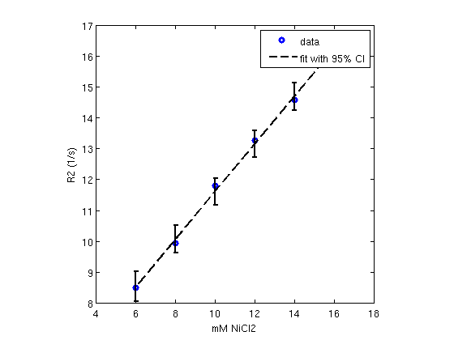
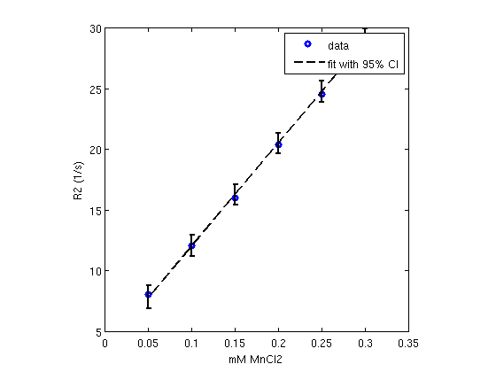

load T2fit.mat
rng(10);
labels_cc = zeros(size(mask));
SE = strel('diamond',2);
for ii=1:ns
m0 = mask(:,:,ii);
m1 = imerode(m0, SE);
[L, ~] = bwlabel(m1, 8);
labels_cc(:,:,ii) = L;
end
labels = labels_cc;
clear labels_cc m0 m1 L SE
num = max(reshape(labels, [], ns), [], 1).';
slices = [5, 5];
idx1 = [4, 8, 9, 1, 7, 12];
idx2 = [3, 6, 11, 2, 5, 10];
idxs = {idx1, idx2};
R2vals = cell(1, length(slices));
map = T2est;
for ii=1:length(slices)
sl = slices(ii);
idx = idxs{ii};
x1 = squeeze(map(:,:,sl,:));
v = zeros(length(idx), 1);
v2 = cell(length(idx), 1);
for jj=1:length(idxs{ii})
m1 = (labels(:,:,sl)==idx(jj));
x2 = sort(1 ./ x1(repmat(m1, [1, 1, size(x1,3)])==1));
i1 = find(x2 > .01*median(x2), 1, 'first');
i2 = find(x2 <= .99*median(x2), 1, 'last');
x3 = x2(i1:i2);
v(jj) = mean(x3);
v2{jj} = x3;
end
R2vals{ii} = v(end:-1:1);
end
axis1 = [6, 8, 10, 12, 14, 16];
axis2 = [.05, .1, .15, .2, .25, .3];
xlabel1 = 'mM NiCl2';
xlabel2 = 'mM MnCl2';
xlabels = {xlabel1, xlabel2};
axiss = {axis1, axis2};
R2trend = zeros(2, length(slices));
for ii=1:length(slices)
[P, S] = polyfit(axiss{ii}.', R2vals{ii}, 1);
[Y, E] = polyconf(P, axiss{ii}, S);
R2trend(:, ii) = P;
figure(ii*10);
plot(axiss{ii}, R2vals{ii}, 'o', 'linewidth', 3)
hold on;
errorbar(axiss{ii}, Y, E, 'k--', 'linewidth', 2);
hold off
xlabel(xlabels{ii});
ylabel('R2 (1/s)');
legend('data', 'fit with 95% CI');
axis square;
fprintf('%20s:\tm2 = %.3f\tR2w = %.3f\n', xlabels{ii}, R2trend(1, ii), R2trend(2, ii));
end
mM NiCl2: m2 = 0.773 R2w = 3.880
mM MnCl2: m2 = 84.966 R2w = 3.530
 